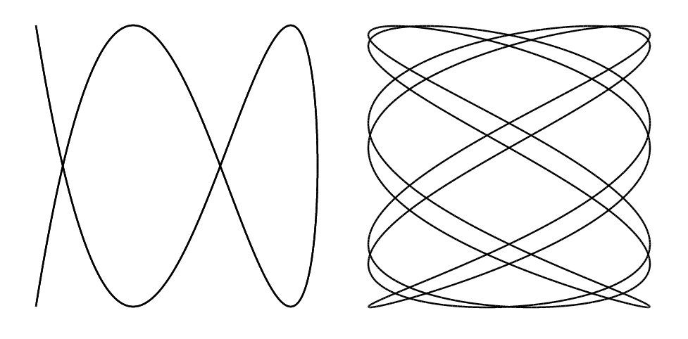

Project Euler 777
Project Euler 777
题目
Lissajous Curves
For coprime positive integers \(a\) and \(b\), let \(C_{a,b}\) be the curve defined by:
\[\begin{aligned} x &= \cos \left(at\right) \\ y &= \cos \left(b\left(t-\frac{\pi}{10}\right)\right) \end{aligned}\]
where \(t\) varies between 0 and \(2\pi\).
For example, the images below show \(C_{2,5}\) (left) and \(C_{7,4}\) (right):

Define \(d(a,b) = \sum (x^2 + y^2)\), where the sum is over all points \((x, y)\) at which \(C_{a,b}\) crosses itself.
For example, in the case of \(C_{2,5}\) illustrated above, the curve crosses itself at two points: \((0.31, 0)\) and \((-0.81, 0)\), rounding coordinates to two decimal places, yielding \(d(2, 5)=0.75\). Some other examples are \(d(2,3)=4.5,d(7,4)=39.5,d(7,5)=52\), and \(d(10,7)=23.25\).
Let \(s(m) = \sum d(a,b)\), where this sum is over all pairs of coprime integers \(a,b\) with \(2\le a\le m\) and \(2\le b\le m\).
You are given that \(s(10) = 1602.5\) and \(s(100) = 24256505\).
Find \(s(10^6)\). Give your answer in scientific notation rounded to 10 significant digits; for example \(s(100)\) would be given as \(2.425650500e7\).
解决方案
这题核心分成两步：先把 \(d(a,b)\) 推成闭式；再用 Möbius 反演高效求和到 \(M=10^6\)。
我们把参数缩放成单位周期形式，令\(u=\dfrac{t}{2\pi}\in[0,1),\)则曲线可写为\(x=\cos(2\pi a u), y=\cos\left(2\pi b\left(u-\dfrac1{20}\right)\right).\)
因为 \(\gcd(a,b)=1\)，整条曲线在 \(u\) 上的周期是 \(1\)。设两参数 \(u_1,u_2\in[0,1)\) 对应同一点，即\(C_{a,b}(u_1)=C_{a,b}(u_2).\) 用恒等式 \(\cos \alpha=\cos\beta \iff \alpha\equiv \pm \beta\pmod{2\pi}\)，得到：
- 对 \(x\) 坐标：\(u_1-u_2\equiv 0\pmod{\dfrac1a}\lor u_1+u_2\equiv 0\pmod{\dfrac1a}.\)
- 对 \(y\) 坐标（注意相位偏移 \(1/20\)）：\(u_1-u_2\equiv 0\pmod{\dfrac1b}\lor u_1+u_2\equiv \dfrac1{10}\pmod{\dfrac1b}.\)
于是共有四种组合需要分析。我们记两类条件分别为差型与和型。
差型 + 差型
那么此时\(u_1-u_2\equiv 0\pmod{\dfrac1a}, u_1-u_2\equiv 0\pmod{\dfrac1b}.\)因 \(\gcd(a,b)=1\)，推出\(u_1-u_2\equiv 0\pmod 1,\)即 \(u_1=u_2\)（同一参数点），这不是自交，都是平凡解。
和型 + 和型
那么此时\(u_1+u_2\equiv 0\pmod{\dfrac1a},u_1+u_2\equiv \dfrac1{10}\pmod{\dfrac1b}.\)
设\(u_1+u_2=\dfrac{k_x}{a}=\dfrac{k_y}{b}+\dfrac1{10},\)则\(bk_x-ak_y=\dfrac{ab}{10}.\)左边是整数，所以必须有\(10\mid ab.\)因此，若 \(10\nmid ab\)，那么此类无解；若 \(10\mid ab\)，那么此类有解，曲线会出现沿原轨迹回走现象。
混合型
那么此时有两种可能：
- \(u_1+u_2\equiv 0\pmod{\dfrac1a},u_1-u_2\equiv 0\pmod{\dfrac1b}\)；
- \(u_1-u_2\equiv 0\pmod{\dfrac1a},u_1+u_2\equiv \dfrac1{10}\pmod{\dfrac1b}\)。
这两类给出真正的自交点。为了统一计数，我们仍取参数代表满足 \(0\le u_1<u_2<1\)，并利用周期 \(1\) 把参数域做一次折叠（把靠右上角的一部分移到左侧），然后改用和差坐标\(s=u_1+u_2, d=u_2-u_1.\) 在折叠后的代表区域中，可以取到\(0\le s<1, 0<d<1.\)其中 \(s\) 的边界 \(0\) 可取，而 \(d=0\) 不可取（因为那会对应 \(u_1=u_2\) 的平凡解）。
对于第一种可能，此时\(u_1+u_2\equiv 0\pmod{\dfrac1a}, u_1-u_2\equiv 0\pmod{\dfrac1b}.\)在 \((s,d)\) 坐标下可写成\(s=\dfrac{k_x}{a}, d=\dfrac{k_y}{b},(k_x,k_y\in\mathbb Z)\)。再结合\(0\le s<1, 0<d<1,\)得到\(0\le \dfrac{k_x}{a}<1, 0<\dfrac{k_y}{b}<1,\)即\(k_x\in\{0,1,\dots,a-1\}, k_y\in\{1,2,\dots,b-1\}.\)
对于第二种可能，此时\(u_1-u_2\equiv 0\pmod{\dfrac1a}, u_1+u_2\equiv \dfrac1{10}\pmod{\dfrac1b}.\)把第二个条件中的相位偏移 \(\dfrac1{10}\) 吸收进和坐标的平移后，仍可写成同样的格点形式（只是 \(a,b\) 的角色互换）：\(d=\dfrac{k_x}{a}, s=\dfrac{k_y}{b}.\)这时由\(0<d<1, 0\le s<1\)得到\(0<\dfrac{k_x}{a}<1, 0\le \dfrac{k_y}{b}<1,\)即\(k_x\in\{1,2,\dots,a-1\}, k_y\in\{0,1,\dots,b-1\}.\)
因此最终得到两组求和范围（边界开闭性正是由 \(s,d\) 的取值范围决定）：
- 第一组：\(k_x\in[0,a-1]\), \(k_y\in[1,b-1]\)；
- 第二组：\(k_x\in[1,a-1]\), \(k_y\in[0,b-1]\)。
对应的 \(x^2+y^2\) 求和可写成： \[ d(a,b)= \sum_{k_x=0}^{a-1}\sum_{k_y=1}^{b-1} \left[ \cos^2\left(\pi \frac{a}{b}k_y\right) + \cos^2\left(\pi \frac{b}{a}k_x-\frac{\pi b}{10}\right) \right] + \sum_{k_x=1}^{a-1}\sum_{k_y=0}^{b-1} \left[ \cos^2\left(\pi \frac{b}{a}k_x\right) + \cos^2\left(\pi \frac{a}{b}k_y+\frac{\pi a}{10}\right) \right], \]
在 \(10\nmid ab\) 情形下，上式可直接成立；而在 \(10\mid ab\) 时，曲线会出现参数周期导致的轨迹重叠（回走）现象，因此需要额外处理由此带来的计数重数变化，并剔除由轨迹重叠产生的伪自交贡献。
接下来求 \(d(a,b)\) 的闭式。
在 \(10\nmid ab\) 情形下，上式可直接成立；而在 \(10\mid ab\) 时，曲线会出现参数周期导致的轨迹重叠（回走）现象，因此需要额外处理由此带来的计数重数变化，并剔除由轨迹重叠产生的伪自交贡献。
接下来求 \(d(a,b)\) 的闭式。记两类混合型对应的求和为
\[ M_1=\sum_{k_x=0}^{a-1}\sum_{k_y=1}^{b-1} \left[ \cos^2\left(\pi \frac{a}{b}k_y\right) + \cos^2\left(\pi \frac{b}{a}k_x-\frac{\pi b}{10}\right) \right], M_2=\sum_{k_x=1}^{a-1}\sum_{k_y=0}^{b-1} \left[ \cos^2\left(\pi \frac{b}{a}k_x\right) + \cos^2\left(\pi \frac{a}{b}k_y+\frac{\pi a}{10}\right) \right]. \]
先用恒等式\(\cos^2 x=\dfrac12+\dfrac12\cos(2x).\)并使用等差角列求和结论：若 \(\gcd(q,r)=1\)，则\(\displaystyle\sum_{j=0}^{r-1}\cos^2\left(\theta+\pi\frac{q}{r}j\right)=\frac r2.\)因此同时有\(\displaystyle \sum_{j=1}^{r-1}\cos^2\left(\pi\frac{q}{r}j\right)=\frac r2-1.\)
对于\(10\nmid ab\)时的情况，此时不存在参数周期导致的轨迹重叠，故\(d(a,b)=M_1+M_2.\)
先算 \(M_1\)，按下标拆开得：\(\displaystyle M_1=a\sum_{k_y=1}^{b-1}\cos^2\left(\pi \frac{a}{b}k_y\right)+(b-1)\sum_{k_x=0}^{a-1}\cos^2\left(\pi \frac{b}{a}k_x-\frac{\pi b}{10}\right).\)由 \(\gcd(a,b)=1\)，上面两个一维和分别为\(\displaystyle\sum_{k_y=1}^{b-1}\cos^2\left(\pi \frac{a}{b}k_y\right)=\frac b2-1,\sum_{k_x=0}^{a-1}\cos^2\left(\pi \frac{b}{a}k_x-\frac{\pi b}{10}\right)=\frac a2.\)所以
\[ M_1=a\left(\frac b2-1\right)+(b-1)\frac a2 =ab-\frac{3a}{2}. \]
同理 \[ M_2=b\sum_{k_x=1}^{a-1}\cos^2\left(\pi \frac{b}{a}k_x\right)+ (a-1)\sum_{k_y=0}^{b-1}\cos^2\left(\pi \frac{a}{b}k_y+\frac{\pi a}{10}\right)\ =b\left(\frac a2-1\right)+(a-1)\frac b2 =ab-\frac{3b}{2}. \]
因此 \[ d(a,b)=M_1+M_2 =2ab-\frac32a-\frac32b. \]
对于\(10\mid ab\)时的情况，这时会出现参数周期导致的轨迹重叠：每个真正自交点在混合型参数枚举中会被计入 \(4\) 次，同时会混入一条特殊列（第一类混合型）和一条特殊行（第二类混合型），它们对应轨迹重叠产生的伪自交，需要剔除。设剔除后的两类混合型贡献分别为 \(N_1,N_2\)，则有\(4d(a,b)=N_1+N_2.\)
对第一类混合型，剔除一条特殊列后，\(k_x\) 的个数从 \(a\) 变成 \(a-1\)；而另一个一维周期和中要删去一个值为 \(1\) 的特殊项，因此\(N_1=(a-1)\left(\dfrac b2-1\right)+(b-1)\left(\dfrac a2-1\right).\)第二类混合型完全对称，同样得到\(N_2=(a-1)\left(\dfrac b2-1\right)+(b-1)\left(\dfrac a2-1\right).\)于是
\[ 4d(a,b) =N_1+N_2 =2\left[(a-1)\left(\frac b2-1\right)+(b-1)\left(\frac a2-1\right)\right] =2ab-3a-3b+4. \]
所以 \[ d(a,b)=\frac12ab-\frac34a-\frac34b+1. \]
综上所述得到， \[ d(a,b)= \begin{cases} 2ab-\dfrac32a-\dfrac32b,& 10\nmid ab,\\ \dfrac12ab-\dfrac34a-\dfrac34b+1,& 10\mid ab. \end{cases} \]
接下来进行数论求和。把上式改写成统一形式，可以得到
\[ 4d(a,b)=8ab-6(a+b)+\mathbf{1}\{10\mid ab\}(4-6ab+3(a+b)). \]
因此\(4s(m)=S_1(m)+S_2(m),\)其中
\[ S_1(m)=\sum_{\substack{2\le a,b\le m\\\gcd(a,b)=1}} \bigl(8ab-6(a+b)\bigr), S_2(m)=\sum_{\substack{2\le a,b\le m\\\gcd(a,b)=1\\10\mid ab}} \bigl(4-6ab+3(a+b)\bigr). \]
现在计算 \(S_1(m).\)先把求和域从 \(2\le a,b\le m\) 扩到 \(1\le a,b\le m\)，再用 Möbius 反演去掉 \(\gcd(a,b)=1\) 限制。设\(F(n)=\dfrac{n(n+1)}2.\)对固定 \(k\)，令 \(a=ku,b=kv\)，则
\[ T_k(n)=\sum_{1\le u,v\le n}\bigl(8k^2uv-6k(u+v)\bigr) =8k^2F(n)^2-12knF(n). \]
于是 \[ S_1(m)=\sum_{k=1}^m \mu(k)T_k\left(\left\lfloor\frac{m}{k}\right\rfloor\right)+2m(5-m)-4. \]
最后这个补偿项是因为 \(S_1\) 原本从 \(2\) 开始，而反演是从 \(1\) 开始。
现在计算 \(S_2(m).\)记\(P(a,b)=4-6ab+3(a+b).\)同样扩域到 \(1\le a,b\le m\)，再做 Möbius 反演：
\[ S_2(m)=\sum_{k=1}^m \mu(k)W_k(m)+2q(8+15q), q=\left\lfloor\frac{m}{10}\right\rfloor. \]
这里补偿项对应扩域后出现的 \((1,10t)\) 与 \((10t,1)\)（\(1\le t\le q\)）这些额外项。
关键是 \(W_k(m)\) 的计算。固定 \(k\) 后，需要在 \(k\mid a,k\mid b\) 的条件下再加上 \(10\mid ab\)。利用 \(10=2\cdot 5\) 的结构做一次容斥（并利用对称性），可化为
\[ W_k=2V_k(1,10)+2V_k(2,5)-2V_k(10,2)-2V_k(10,5)-V_k(10,10), \]
其中 \[ V_k(\alpha,\beta)= \sum_{\substack{1\le a,b\le m\\\operatorname{lcm}(k,\alpha)\mid a\\\operatorname{lcm}(k,\beta)\mid b}} P(a,b). \]
设\(A=\operatorname{lcm}(k,\alpha), B=\operatorname{lcm}(k,\beta),n_A=\left\lfloor\dfrac{m}{A}\right\rfloor, n_B=\left\lfloor\dfrac{m}{B}\right\rfloor,\)则令 \(a=Au,b=Bv\)，有 \[ V_k(\alpha,\beta) = \sum_{u=1}^{n_A}\sum_{v=1}^{n_B}\Bigl(4-6ABuv+3(Au+Bv)\Bigr)\ = 4n_An_B -6ABF(n_A)F(n_B) +3AF(n_A)n_B +3BF(n_B)n_A. \]
这样 \(S_2\) 也能在线性时间内算完。
代码
1 | from tools import gcd |